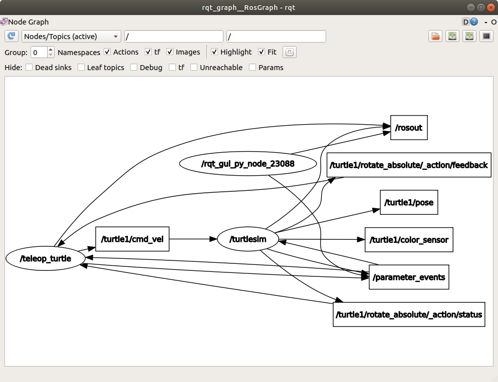

備註
您正在閱讀 ROS 2 的舊版但仍然受支援的文件。對於最新版本的資訊，請參見 Kilted。
Understanding topics
Goal: Use rqt_graph and command line tools to introspect ROS 2 topics.
Tutorial level: Beginner
Time: 20 minutes
Background
ROS 2 breaks complex systems down into many modular nodes. Topics are a vital element of the ROS graph that act as a bus for nodes to exchange messages.

A node may publish data to any number of topics and simultaneously have subscriptions to any number of topics.

Topics are one of the main ways in which data is moved between nodes and therefore between different parts of the system.
Prerequisites
The previous tutorial provides some useful background information on nodes that is built upon here.
As always, don't forget to source ROS 2 in every new terminal you open.
Tasks
1 Setup
By now you should be comfortable starting up turtlesim.
Open a new terminal and run:
$ ros2 run turtlesim turtlesim_node
Open another terminal and run:
$ ros2 run turtlesim turtle_teleop_key
Recall from the previous tutorial that the names of these nodes are /turtlesim and /teleop_turtle by default.
2 rqt_graph
Throughout this tutorial, we will use rqt_graph to visualize the changing nodes and topics, as well as the connections between them.
The turtlesim tutorial tells you how to install rqt and all its plugins, including rqt_graph.
To run rqt_graph, open a new terminal and enter the command:
$ ros2 run rqt_graph rqt_graph
You can also open rqt_graph by opening rqt and selecting Plugins > Introspection > Node Graph.

You should see the above nodes and topic, as well as two actions around the periphery of the graph (let's ignore those for now). If you hover your mouse over the topic in the center, you'll see the color highlighting like in the image above.
The graph is depicting how the /turtlesim node and the /teleop_turtle node are communicating with each other over a topic.
The /teleop_turtle node is publishing data (the keystrokes you enter to move the turtle around) to the /turtle1/cmd_vel topic, and the /turtlesim node is subscribed to that topic to receive the data.
The highlighting feature of rqt_graph is very helpful when examining more complex systems with many nodes and topics connected in many different ways.
rqt_graph is a graphical introspection tool. Now we'll look at some command line tools for introspecting topics.
3 ros2 topic list
Running the ros2 topic list command in a new terminal will return a list of all the topics currently active in the system:
$ ros2 topic list
/parameter_events
/rosout
/turtle1/cmd_vel
/turtle1/color_sensor
/turtle1/pose
ros2 topic list -t will return the same list of topics, this time with the topic type appended in brackets:
$ ros2 topic list -t
/parameter_events [rcl_interfaces/msg/ParameterEvent]
/rosout [rcl_interfaces/msg/Log]
/turtle1/cmd_vel [geometry_msgs/msg/Twist]
/turtle1/color_sensor [turtlesim/msg/Color]
/turtle1/pose [turtlesim/msg/Pose]
These attributes, particularly the type, are how nodes know they're talking about the same information as it moves over topics.
If you're wondering where all these topics are in rqt_graph, you can uncheck all the boxes under Hide:
For now, though, leave those options checked to avoid confusion.
4 ros2 topic echo
To see the data being published on a topic, use:
$ ros2 topic echo <topic_name>
Since we know that /teleop_turtle publishes data to /turtlesim over the /turtle1/cmd_vel topic, let's use echo to introspect that topic:
$ ros2 topic echo /turtle1/cmd_vel
At first, this command won't return any data.
That's because it's waiting for /teleop_turtle to publish something.
Return to the terminal where turtle_teleop_key is running and use the arrows to move the turtle around.
Watch the terminal where your echo is running at the same time, and you'll see position data being published for every movement you make:
linear:
x: 2.0
y: 0.0
z: 0.0
angular:
x: 0.0
y: 0.0
z: 0.0
---
Now return to rqt_graph and uncheck the Debug box.

/_ros2cli_26646 is the node created by the echo command we just ran (the number might be different).
Now you can see that the publisher is publishing data over the cmd_vel topic, and two subscribers are subscribed to it.
5 ros2 topic info
Topics don't have to only be one-to-one communication; they can be one-to-many, many-to-one, or many-to-many.
Another way to look at this is running:
$ ros2 topic info /turtle1/cmd_vel
Type: geometry_msgs/msg/Twist
Publisher count: 1
Subscription count: 2
5.1 ros2 topic info --verbose
For more detailed information about a topic, you can use the --verbose (or -v) flag:
$ ros2 topic info /turtle1/cmd_vel --verbose
This will return additional details including:
Node names and namespaces of publishers and subscribers
Topic type
QoS profiles
Type: geometry_msgs/msg/Twist
Publisher count: 1
Node name: teleop_turtle
Node namespace: /
Topic type: geometry_msgs/msg/Twist
Topic type hash: RIHS01_9c45bf16fe0983d80e3cfe750d6835843d265a9a6c46bd2e609fcddde6fb8d2a
Endpoint type: PUBLISHER
GID: 24.ba.3e.e7.c1.51.bb.46.21.41.de.36.1b.14.73.5e
QoS profile:
Reliability: RELIABLE
History (Depth): KEEP_LAST (7)
Durability: VOLATILE
Lifespan: Infinite
Deadline: Infinite
Liveliness: AUTOMATIC
Liveliness lease duration: Infinite
Subscription count: 2
Node name: _ros2cli_300492
Node namespace: /
Topic type: geometry_msgs/msg/Twist
Topic type hash: RIHS01_9c45bf16fe0983d80e3cfe750d6835843d265a9a6c46bd2e609fcddde6fb8d2a
Endpoint type: SUBSCRIPTION
GID: cc.4d.98.79.29.91.fe.25.8a.0a.c9.03.db.1a.ec.81
QoS profile:
Reliability: RELIABLE
History (Depth): KEEP_LAST (5)
Durability: VOLATILE
Lifespan: Infinite
Deadline: Infinite
Liveliness: AUTOMATIC
Liveliness lease duration: Infinite
Node name: turtlesim
Node namespace: /
Topic type: geometry_msgs/msg/Twist
Topic type hash: RIHS01_9c45bf16fe0983d80e3cfe750d6835843d265a9a6c46bd2e609fcddde6fb8d2a
Endpoint type: SUBSCRIPTION
GID: 9c.33.59.38.b2.f2.42.47.69.1b.7f.0e.5e.1d.86.f5
QoS profile:
Reliability: RELIABLE
History (Depth): KEEP_LAST (7)
Durability: VOLATILE
Lifespan: Infinite
Deadline: Infinite
Liveliness: AUTOMATIC
Liveliness lease duration: Infinite
6 ros2 interface show
Nodes send data over topics using messages. Publishers and subscribers must send and receive the same type of message to communicate.
The topic types we saw earlier after running ros2 topic list -t let us know what message type is used on each topic.
Recall that the cmd_vel topic has the type:
geometry_msgs/msg/Twist
This means that in the package geometry_msgs there is a msg called Twist.
Now we can run ros2 interface show <msg_type> on this type to learn its details.
Specifically, what structure of data the message expects.
$ ros2 interface show geometry_msgs/msg/Twist
Which will return:
# This expresses velocity in free space broken into its linear and angular parts.
Vector3 linear
float64 x
float64 y
float64 z
Vector3 angular
float64 x
float64 y
float64 z
This tells you that the /turtlesim node is expecting a message with two vectors, linear and angular, of three elements each.
If you recall the data we saw /teleop_turtle passing to /turtlesim with the echo command, it's in the same structure:
linear:
x: 2.0
y: 0.0
z: 0.0
angular:
x: 0.0
y: 0.0
z: 0.0
---
7 ros2 topic pub
Now that you have the message structure, you can publish data to a topic directly from the command line using:
$ ros2 topic pub <topic_name> <msg_type> '<args>'
The '<args>' argument is the actual data you'll pass to the topic, in the structure you just discovered in the previous section.
The turtle (and commonly the real robots which it is meant to emulate) require a steady stream of commands to operate continuously. So, to get the turtle moving, and keep it moving, you can use the following command. It's important to note that this argument needs to be input in YAML syntax. Input the full command like so:
$ ros2 topic pub /turtle1/cmd_vel geometry_msgs/msg/Twist "{linear: {x: 2.0, y: 0.0, z: 0.0}, angular: {x: 0.0, y: 0.0, z: 1.8}}"
With no command-line options, ros2 topic pub publishes the command in a steady stream at 1 Hz.

At times you may want to publish data to your topic only once (rather than continuously).
To publish your command just once add the --once option.
$ ros2 topic pub --once -w 2 /turtle1/cmd_vel geometry_msgs/msg/Twist "{linear: {x: 2.0, y: 0.0, z: 0.0}, angular: {x: 0.0, y: 0.0, z: 1.8}}"
--once is an optional argument meaning "publish one message then exit".
-w 2 is an optional argument meaning "wait for two matching subscriptions".
This is needed because we have both turtlesim and the topic echo subscribed.
You will see the following output in the terminal:
Waiting for at least 2 matching subscription(s)...
publisher: beginning loop
publishing #1: geometry_msgs.msg.Twist(linear=geometry_msgs.msg.Vector3(x=2.0, y=0.0, z=0.0), angular=geometry_msgs.msg.Vector3(x=0.0, y=0.0, z=1.8))
And you will see your turtle move like so:

You can refresh rqt_graph to see what's happening graphically.
You will see that the ros2 topic pub ... node (/_ros2cli_30358) is publishing over the /turtle1/cmd_vel topic, which is being received by both the ros2 topic echo ... node (/_ros2cli_26646) and the /turtlesim node now.

Finally, you can run echo on the pose topic and recheck rqt_graph:
$ ros2 topic echo /turtle1/pose

You can see that the /turtlesim node is also publishing to the pose topic, which the new echo node has subscribed to.
When publishing messages with timestamps, pub has two methods to automatically fill them out with the current time.
For messages with a std_msgs/msg/Header, the header field can be set to auto to fill out the stamp field.
$ ros2 topic pub /pose geometry_msgs/msg/PoseStamped '{header: "auto", pose: {position: {x: 1.0, y: 2.0, z: 3.0}}}'
If the message does not use a full header, but just has a field with type builtin_interfaces/msg/Time, that can be set to the value now.
$ ros2 topic pub /reference sensor_msgs/msg/TimeReference '{header: "auto", time_ref: "now", source: "dumy"}'
8 ros2 topic hz
You can also view the rate at which data is published using:
$ ros2 topic hz /turtle1/pose
average rate: 59.354
min: 0.005s max: 0.027s std dev: 0.00284s window: 58
It will return data on the rate at which the /turtlesim node is publishing data to the pose topic.
Recall that you set the rate of turtle1/cmd_vel to publish at a steady 1 Hz using ros2 topic pub --rate 1.
If you run the above command with turtle1/cmd_vel instead of turtle1/pose, you will see an average reflecting that rate.
備註
The rate reflects the receiving rate on the subscription created by the ros2 topic hz command, which might be affected by platform resources and QoS configuration, and may not exactly match the publisher rate.
9 ros2 topic bw
The bandwidth used by a topic can be viewed using:
$ ros2 topic bw /turtle1/pose
Subscribed to [/turtle1/pose]
1.51 KB/s from 62 messages
Message size mean: 0.02 KB min: 0.02 KB max: 0.02 KB
It returns the bandwidth utilization and number of messages being published to the /turtle1/pose topic.
備註
The bandwidth reflects the receiving rate on the subscription created by the ros2 topic bw command, which might be affected by platform resources and QoS configuration, and may not exactly match the publisher's bandwidth.
10 ros2 topic find
To list a list of available topics of a given type use:
$ ros2 topic find <topic_type>
Recall that the cmd_vel topic has the type:
geometry_msgs/msg/Twist
Using the find command outputs topics available when given the message type:
$ ros2 topic find geometry_msgs/msg/Twist
/turtle1/cmd_vel
11 Clean up
At this point you'll have a lot of nodes running.
Don't forget to stop them by entering Ctrl+C in each terminal.
Summary
Nodes publish information over topics, which allows any number of other nodes to subscribe to and access that information. In this tutorial you examined the connections between several nodes over topics using rqt_graph and command line tools. You should now have a good idea of how data moves around a ROS 2 system.
下一步
Next you'll learn about another communication type in the ROS graph with the tutorial Understanding services.